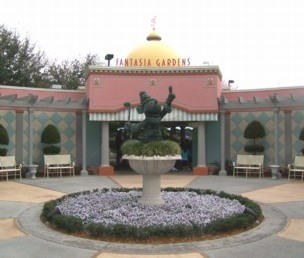
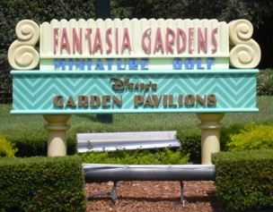
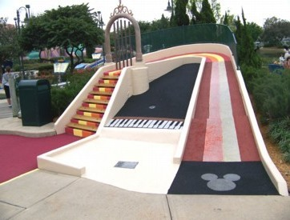
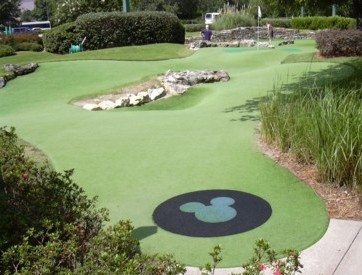

Y:
Fantasia Gardens
and Fairways1200 Epcot Resort Drive, Orlando
(next to the Swan Hotel)
(407) 824-4321, web site
  | Price: $14 Number of Courses: 2 Music: Classical The two courses are quite different: one has a Disney Fantasia theme, and the other reminds of real golf for the adults.  
| Fantasia Gardens Upkeep: B Originality: B Hole-in-One Difficulty: Medium Par Difficulty: Medium
This course offers many Disney statuettes and rhyming instructions, but it is more than a kiddie course. The holes require both a delicate touch and some accuracy. A bit too many "hit it really hard and hope for the best" type of holes, but otherwise a great and enjoyable course. This course is really crowded, so be prepared to wait half an hour for a tee time.
Fantasia Fairways Upkeep: B Originality: B Hole-in-One Difficulty: Impossible Par Difficulty: Impossible
This course is easily the hardest course I have ever played. On six holes I had to take the 6-stroke maximum! The holes are long with much topography, and hardly any rims to keep the ball in play. We saw lots of wildlife, including ducks and a rabbit. |